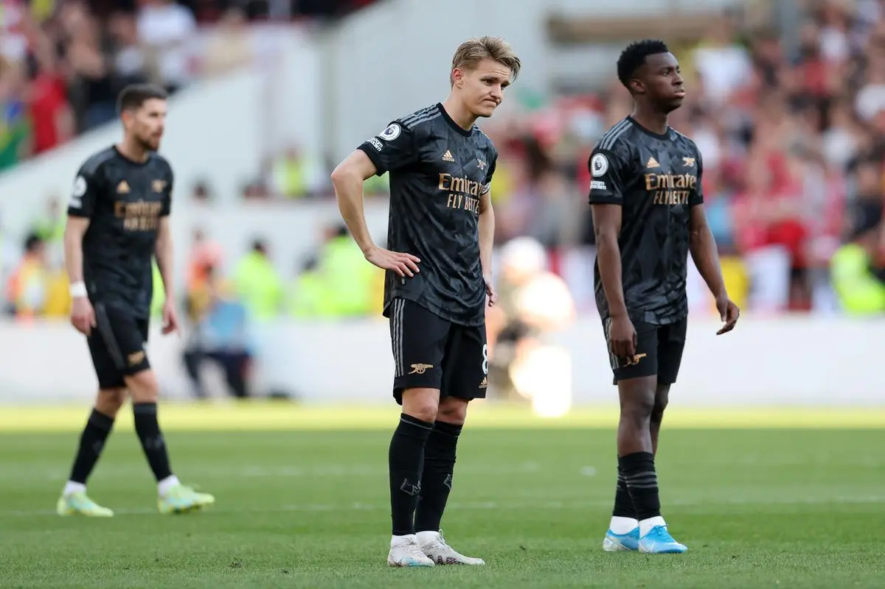
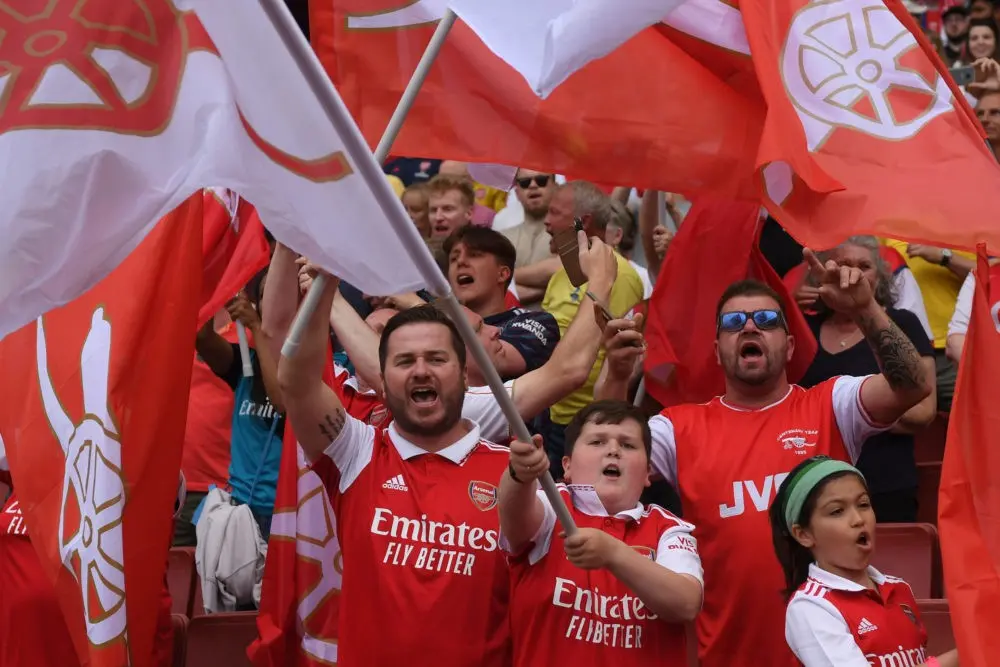

Arsenal · Hy vọng
It is hope
that kills us.
Thứ đã làm chúng ta vỡ tan biết bao lần, cũng là thứ giữ chúng ta ở lại cho tới ngày cuối cùng.

Chúng ta đã phải chờ bao lâu? Liệu gánh nặng và ước mơ vô địch đã bắt đầu đè lên vai các cầu thủ, cũng như khảm vào tâm trí của các Gooners từ khi nào? Liệu có phải từ chiếc cúp vàng của mùa giải bất bại 2003/04, hay từ khi những hy vọng bắt đầu nhen nhóm vào mùa 2022/23, khi Arsenal chơi thứ bóng đá hoa mỹ, tinh xảo như kim cương, nhưng cuối cùng lại dễ vỡ như thủy tinh? Liệu chúng ta đã bắt đầu hy vọng từ ngày người đội trưởng Arteta quay về mái nhà xưa, nơi vốn đã mục nát đi nhiều phần sau khi anh rời đi? Hay liệu thứ hy vọng đó chưa bao giờ thật sự biến mất, mà chỉ âm ỉ cháy trong tim chúng ta, chực chờ một mồi lửa đủ lớn để bùng lên?
Chính thứ hy vọng đó là thứ đã giết chúng ta biết bao lần. Đó là Fabregas, là Van Persie, là Nasri, là Giroud, là Aubameyang, là trận chung kết League Cup 2011, là sân Olympic mùa hè 2019, là Wembley tháng 4-2026. Đó là ba lần về nhì liên tiếp, ba lần thất bại, ba năm liên tiếp đứng trước ngưỡng cửa thiên đường, khi mà dường như số phận muốn trêu ngươi đội bóng này, những con người này, và cả những ai đã lỡ trao trái tim mình cho màu áo đỏ trắng.

Daniel Kahneman và Amos Tversky (1979) từng đề cập tới “loss aversion”, rằng mỗi mất mát thường đau đớn hơn gấp hai lần so với niềm vui mà một thành quả mang lại. Đối với fan Arsenal, có lẽ điều đó chưa bao giờ chỉ là một khái niệm nằm trong sách vở, mỗi thất bại day dứt hơn gấp đôi mỗi lần đội có được ba điểm, mỗi lần về nhì lại cay đắng hơn nhiều, mỗi lần nhìn Liverpool hay Man City nâng cao chiếc cúp lại cứa vào tim chúng ta thêm biết bao vết thương, lại làm vỡ vụn thứ hy vọng vốn nhiều người cho rằng chẳng nên ở đó ngay từ đầu.
But you cannot truly love without hope.
Nhưng cũng chính thứ hy vọng đó là thứ làm chúng ta bám trụ với câu lạc bộ này, sau bao nhiêu lần vỡ tan, bao nhiêu thất bại, bao nhiêu lời từ biệt. Vậy mà chúng ta vẫn ở đây, vẫn ngân nga câu hát North London Forever như một lẽ đương nhiên, như rằng mặc dù chuyện gì xảy ra, dù bầu trời kia có sập xuống, chúng ta sẽ vẫn ở đây.

Và cuối cùng, sau bao nhiêu cay đắng, như cầu vồng sau mưa, tất cả đã được đền đáp. Khoảnh khắc tất cả mọi người vỡ òa sau trận Man City - Bournemouth, xả ra tất cả cảm xúc dồn nén bấy lâu. Chúng ta đã làm được. Chúng ta là những nhà vô địch. Lúc Ødegaard nâng cao chiếc cúp, pháo hoa đỏ bay ngập trời, fan lại nghêu ngao hát, thời gian như ngừng lại với mình, tâm trí mình nghĩ về những nét chân chim trên mắt của Bố Wenger, về những đường chuyền của Özil, về đôi chân ma thuật của Cazorla, về sự hoa mỹ của Sánchez, về những lần Henry bất chấp tất cả để bảo vệ câu lạc bộ này trước truyền thông, về tất cả những năm tháng đã qua. Tất cả chúng ta đều xứng đáng với điều này.